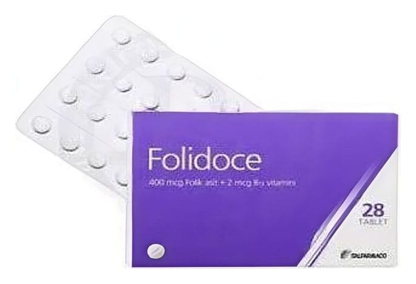

Folidoce 400 mcg/2 mcg Tablet, 28 Adet

Ne için kullanılır
KT · Bölüm 1FOLIDOCE etkin madde olarak 400 mikrogram folik asit ve 2 mikrogram Vitamin Bi2 içerir. Sarı renkli düz, yuvarlak, tabletler halinde, 28 tabletlik opak polivinil klorür/alüminyum blister ambalajlarda kullanıma sunulmuştur. Folik asit bir vitamindir ve vücudunuzun yeni hücre yapabilmesi için gereklidir. Özellikle bebek sahibi olmayı planlıyorsanız ya da hamileyseniz bebeğinizin gelişimi için uygun biçimde folik asit almalısınız. Vitamin Bı>, de folik asidin işlevini sürdürmesinde önemli rol oynayan bir vitamindir. FOLIDOCE, bebeklerin nöral tüp defekti örn. spina bifida (omuriliğin alt ucunu içeren seyrek görülen bir malformasyondur, omuriliğin fıtıklaşmasına, bağırsak fonksiyonlarının ve idrar tutamamaya, bacaklarda hareket ve duyu kaybına yol açabilir) ile doğmasının önlenmesinde yararlıdır.
BERR RR RR GR RR RA